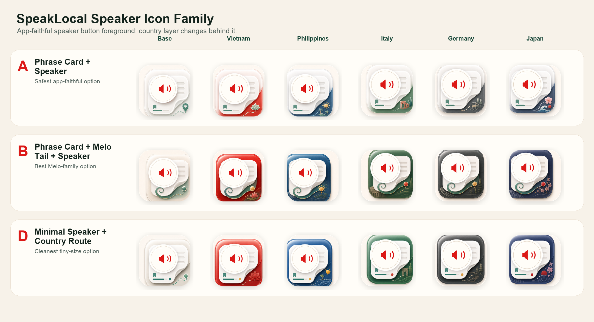
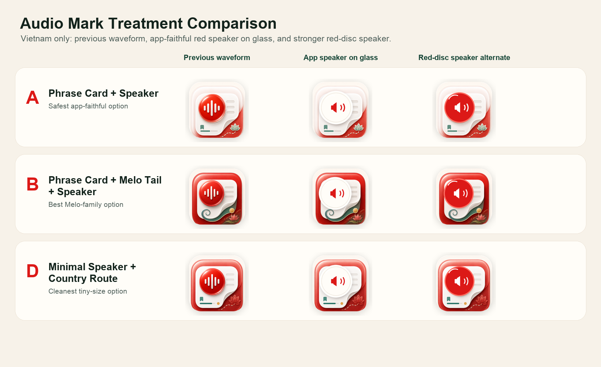
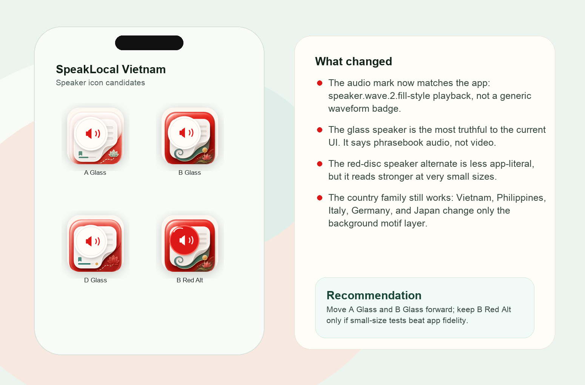
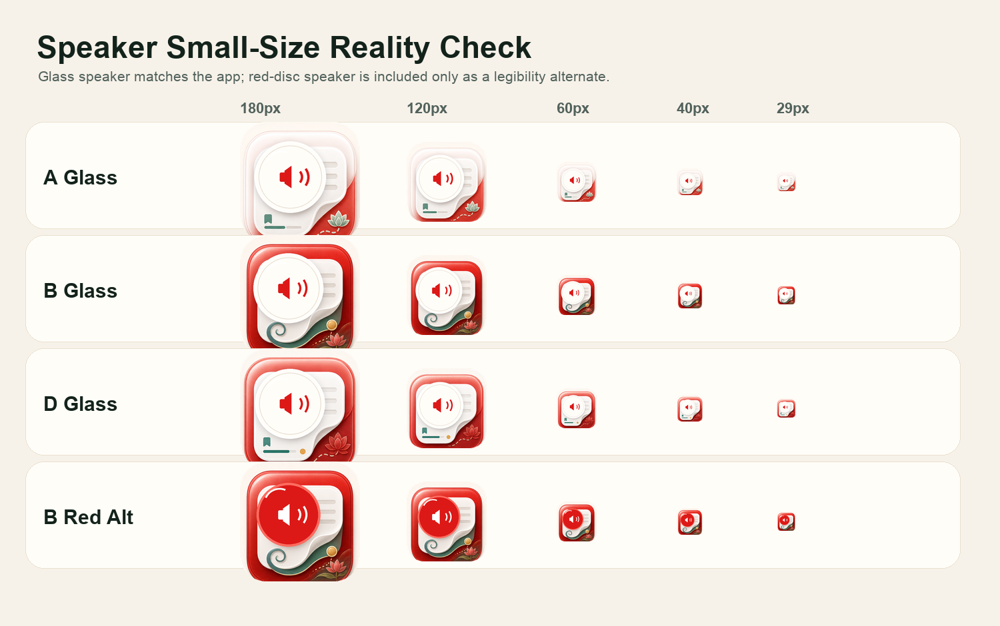
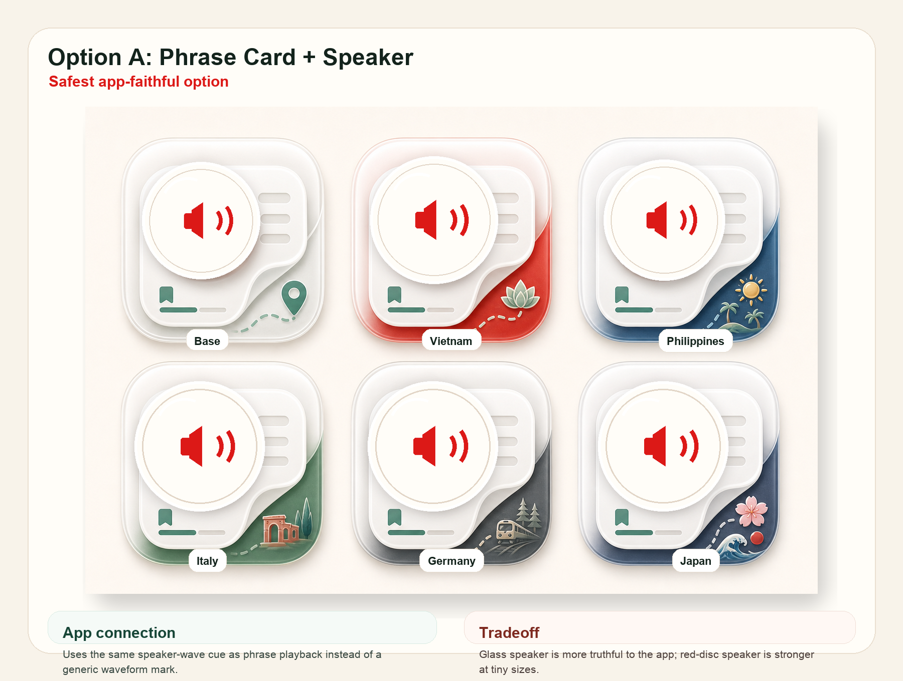
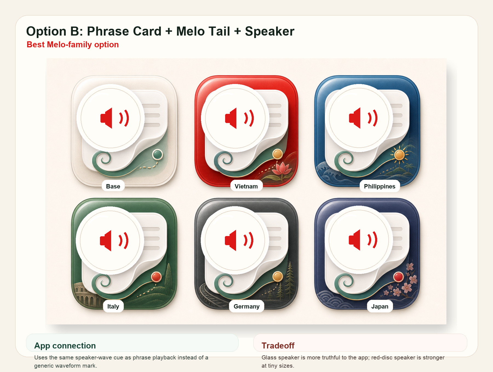
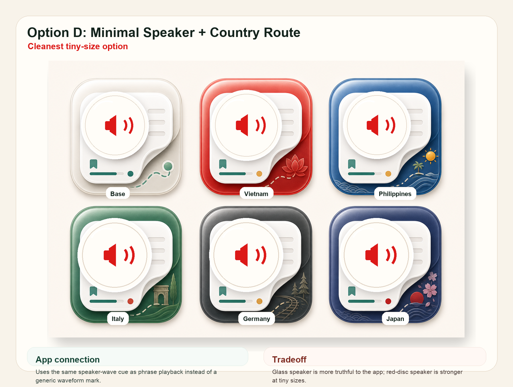

SpeakLocal Icon Family With Speaker Audio
This replaces the previous waveform badge with a red speaker cue that matches the app’s phrase playback buttons. The icon now reads more like an offline audio phrasebook while keeping the same country-family system.
Country Family
The foreground stays SpeakLocal: phrase card, glass speaker, red speaker glyph, and jade saved/progress. Only the country layer changes.

Audio Mark Swap
The glass speaker is the most app-faithful version. The red-disc speaker is included only as a small-size alternate.

Vietnam Context
The strongest decision pair is A Glass versus B Glass. B keeps Melo in the system without making the app feel mascot-first.

Small-Size Check
The speaker still reads at small sizes, but final vector cleanup should simplify the card lines and country details.

Annotated Sheets


